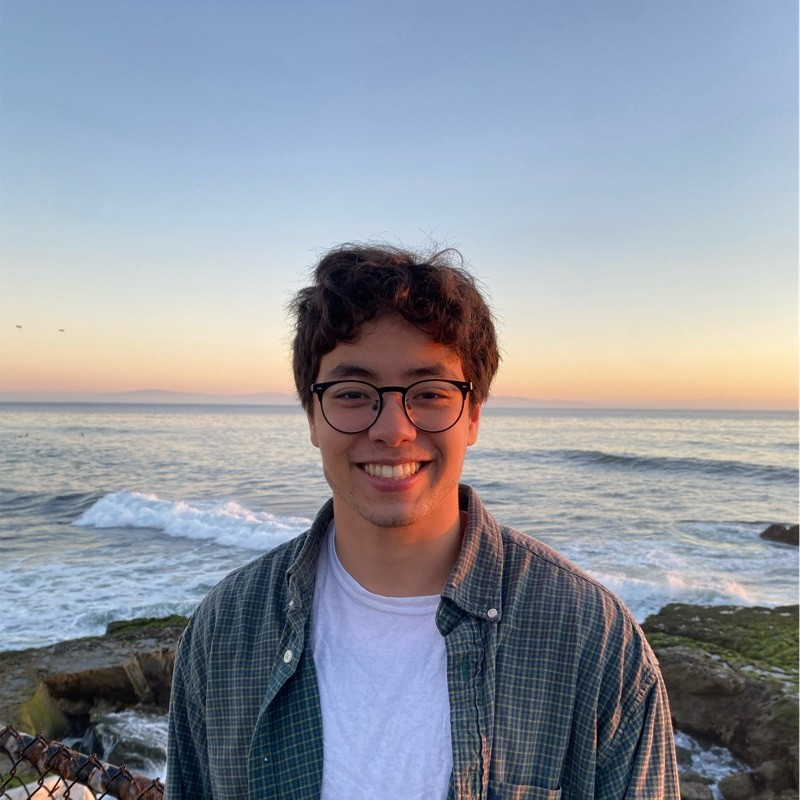

omarah@stanford.edu

Hi, my name is Omar Abul-Hassan, and I'm a fourth-year undergraduate, first-year Master's student at Stanford University studying mathematics.
My advisor is Dr. Xinwen Zhu.
I was an intern at Microsoft Security, Citadel Securities, and Jump Trading.
I did research at Etched, working on inference.
I also did research at the Scaling Intelligence Lab on KernelBench under Azalia Mirhoseini.
I'm an incoming research intern at Sakana AI for the summer, and an incoming full-time researcher at Jump Trading on their low frequency team.